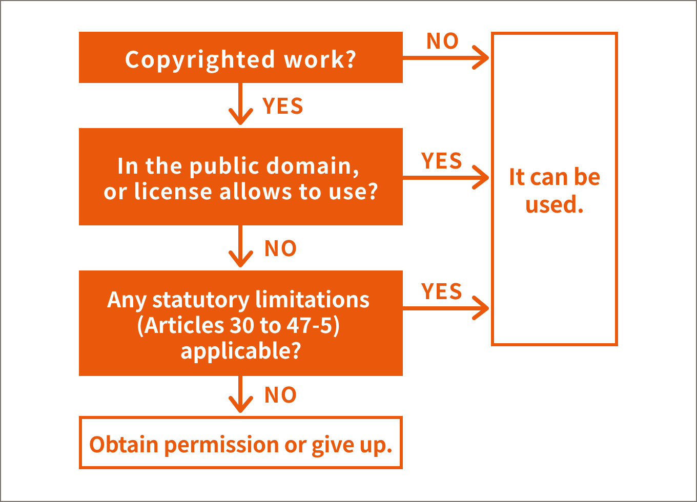
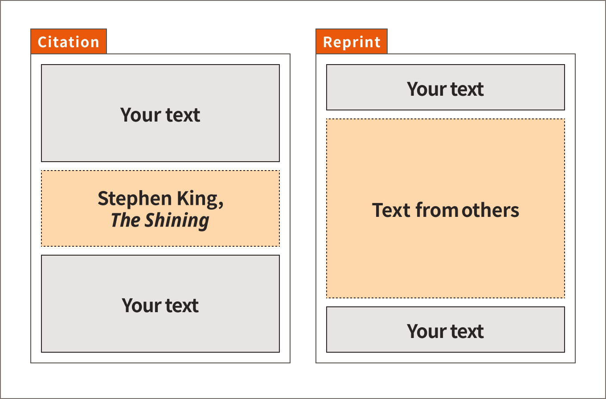
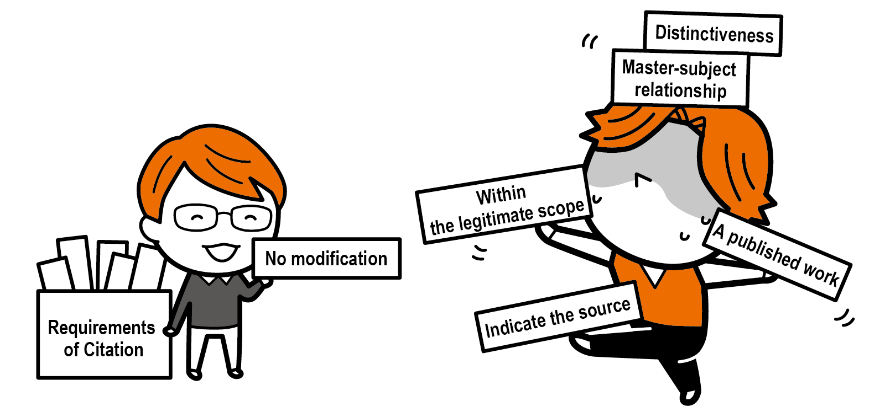

This section describes the requirements for dealing with third-party copyrighted works in classes, the definitions of terms, and the flow for dealing with copyrighted works in classes.
Copyrighted Works in Classes
Sumiki
What are some of the situations in which you deal with third-party copyrighted works in your classes?
Konaka
Use of text or illustrations in print or ...
Daiin
I sometimes use them in the slides I show in my class. I also use the LMS (Learning Management System) to
distribute materials.
Sumiki
Dr. Konaka also writes on the board and reads to the students, right?
Konaka
Oh, is that related to copyright too?
Sumiki
Writing on the board is related to reproduction rights, reading publicly is subject to recitation rights, and
distributing materials in the LMS involves reproduction and public transmission rights.
Daiin
In "Chapter 1 Section 04 What is Copyright?" we were told that viewing and operating a website is a public
communication.
Sumiki
We have that, too. Also, there are times when we play videos in classes, and that involves on-screen
presentation rights.
Konaka
So, copyright involves many different rights.
In "Chapter 1, Section 04 What is Copyright?" we talked about available copyrighted works and limitations of
rights. When handling a third party's copyrighted work in classes, it is necessary to confirm as shown in the
"flow chart for handling copyrighted works in classes" below.
[Flow chart for dealing with copyrighted works in classes.]

There are many provisions limiting rights, but in the classroom, it is recommended to keep in mind "Citation
(Article 32(1))", "Reproduction, etc. in schools and other educational institutions (Article 35)", and "Non-profit
on-screen presentation, etc. (Article 38)".
Article 38 can apply to many cases like the previous examples such as reading to a class or showing a video.
We explain Articles 32 and 35 in more detail in the following sections.
section
02
Citation (Article 32(1))
This section explains "Citation" under the Copyright Act. There are many requirements regarding "Citation", and there are many explanations, but please try your best to read them.
What is a citation?
Sumiki
What do you think of when you hear the word "citation"?
Daiin
If it's used or pulled from somewhere else, is it a citation? Is it a reprint?
Konaka
Like a summary or something?
Sumiki
"Citation" in the broadest sense means different things to different people. What is explained here is only a
"citation" under the Copyright Act. Please note that the term "citation" used in a broader sense has a different
meaning.
Article 32(1) of the Copyright Act states:
Article 32 (Citation)
(1)A published work may be quoted and used. In this case, the
citation shall conform with fair practice and within the scope justifiable for news reporting, criticism,
research, and other citations.
To use a copyrighted work as a citation under Article 32(1), all of the following requirements must be met:
A published work.
A "citation".
Distinctiveness: the cited part must be clear (e.g., brackets, separator lines, etc.).
Master-subject relationship: the text is the "master" and the cited part is the "subject" in both quantity
and quality.
Use by citation is consistent with "fair practice" and "within the legitimate scope for the citation".
It should not cause significant financial damage to the copyright owner, such as adversely affecting the
sale of the copyrighted work, and the question is whether the portion of the entire work that is cited and
used is reasonable in scope.
Indicate the source.
The cited part must not have been altered.
Memo
The purpose, method, and manner of the use of another person's work, the type and nature of the work to be used,
and the existence or non-existence and degree of influence on the copyright owner of the work in question should
be comprehensively considered. Tokyo District Court, February 21, 2018 (2016 (wa) 37339) [Okinawa Urizun no Ame
Case].
Memo
To be precise, the indication of the source (Article 48(1)(i)) is not a requirement for citation, but a court
considers it in determining whether it conforms to "fair practice" (Intellectual Property High Court, August 23,
2018 (2016 (ne) 10023) [Okinawa Urizun no Ame Case]). In any case, it is important to understand that the source
must be indicated.
Memo
Although not strictly a requirement for citation, we also add that the cited part has not been altered because
of the need to consider the integrity right.
Daiin
What does it mean that "it must be a citation" is among the requirements for applying a citation?
Sumiki
You want to reproduce a third party's work for some purpose. At that time, it
must be clear which part of your work is being reproduced (distinctiveness), and your work must be qualitatively
and quantitatively the "master" (master-subject relationship). These are the minimum requirements for a
"citation" rather than a mere reprint [difference between citation and reprint].
Daiin
I see. So, if it is a "citation," and all the other requirements, such as the source indication, are met, then
Article 32 can apply.
Sumiki
Your understanding is correct.
Memo
There is no definition of "reprint" in the Copyright Act. According to Nobuhiro Nakayama, Copyright Law, 4th ed., Yuhikaku, 2023, p. 428, "Reprint means publishing a work in whole or in part as is. The citation is
also a type of reprint".
Memo
There are various opinions on understanding the requirements for citation, especially regarding distinctiveness
and the master-subject relationship. Regardless of the understanding, as long as these requirements are met, it
will be a legitimate citation.
[The difference between citation and reprint.]

Column
There is also an opinion that the necessity of citation is a requirement. For example, Moriyuki Kato, Commentary on the Copyright Act 7th revised ed., CRIC, 2021, p. 302, and the Tokyo District Court, February 9, 2011, pointed out that the lack
of necessity of citation is one circumstance that is consistent with "fair practice" and does not fall "within the
legitimate scope" for citation. However, the prevailing view is that the necessity of citation is not required
(Nobuhiro Nakayama,
Copyright Law, 4th ed., Yuhikaku, 2023, p. 421).
Sumiki
It is often not a legitimate scope for citation to include illustrations for liveliness because the margins of
prints, slides, etc. are blank. However, if you need to study or critique a certain character, you can cite and
use a picture of that character.
Daiin
If it was a study of Pikachu, you could use Pikachu's picture.
Sumiki
You need to fulfill all the requirements for citation, so it does not mean that you can use any picture of
Pikachu if you are researching Pikachu.
Konaka
What is the source ... ?
Sumiki
Haha, the usual way to say it is "show the source".
Daiin
If it's a sentence, it has to be written as is, right? Even if there are typos in the original text?
Sumiki
The cited part should be written as it is. If there are typos or omissions in the original, it is best to write
"as is" or something similar. Translated citations are allowed under the Copyright Act.
Konaka
What should I do with images and such? Do I crop a portion of the image with the minimum necessary or use it in
its original form without alteration?
Sumiki
The basic rule is to use the image as is. However, if you wish to refer to a part of the image with particular
attention, you must indicate that it is a part of the image and make it clear that it is a citation [example of
citing an image].
Memo
While translation citations (Article 47-6(1)(ii)) are permitted under the Copyright Act, a summary citation is
not permitted under the Copyright Act and is left to interpretation (a court permitted summary citation, see
Tokyo District Court, October 30, 1998, HANREI TIMES No. 991, p. 240 (Blood Type and Personality in Social
History Case)).
Memo
Nobuhiro Nakayama, Copyright Law, 4th ed., Yuhikaku, 2023, p. 428, states, "In the
citation, the issue of the integrity right inevitably arises unless the citation is full, but as long as a
partial citation is the norm and the citation is legal, the author is unlikely to be misled as to its connection
with the work. As long as the citation is lawful, there is little risk that the author will be misled as to the
connection with the work. The court concluded that the integrity right is not infringed.
[Sample image citation]
Daiin
What should I do with a video? I know you said not to alter it, but don't you want to mention just a particular
scene?
Sumiki
For videos, it is possible to cut out the part of the video to be cited to the extent necessary or to use screen
captures. Again, the citation must be clear and meet all requirements for citation.
Konaka
The extent of using only what is needed is well understood, but what is the master-subject relationship like?
Sumiki
In the case of text, the part you are writing must be more than the cited part. In the case of images, if the
image is used in such a way that it has the main meaning, it does not count as a citation. For example, a
half-page spread in an art book is a high-quality image.
Daiin
In many cases, a slide page can only contain the image and a little explanatory text. Then the image will
inevitably be larger.
Sumiki
I think you are usually using slides when you are giving a presentation, so you are explaining verbatim. If you
do so, your content together with the teacher's explanation would be the "master" content, and the image would
be the "subject" content, then I think you can apply the citation. However, if only this slide material is
distributed, the teacher's verbal explanation will be lost, and when the entire slide is image-centered and
one's explanation part is thin in both volume and content, the master-subject relationship may be NG.
Daiin
Hmmm, harsh ...
Memo
The quantity of the master-subject relationship is not formally determined. For example, it was held that it is
not appropriate to compare the number of works cited with that of the cited work by taking only the pages where
the work is cited in a book (Tokyo High Court, April 25, 2000, HANREI JIHO No. 1724, p. 124 [Datsu Gomanizumu
Sengen Case]).
Point
"Citation" under the Copyright Act must meet all requirements.

section
03
Reproduction, etc. for class purposes (Article 35)
This section describes Article 35, which governs reproduction and public transmission for classroom purposes. It also explains what happened when Article 35 was amended in 2018.
Limitations on rights when dealing with copyrighted works in the classroom
Article 35 of the Copyright Act provides for limitations on rights when dealing with copyrighted works in the
course of classes. It allows the use of other people's copyrighted works without the permission of the copyright
owner, although only to a limited extent, for materials that you wish to share with students in a class.
It is important to be aware that you cannot do everything, but what you can do and the scope of what you can do
are "limited". They are written in the text of the Copyright Act, and the Guidelines for Article 35 under the
Amended Copyright Act attempt to summarize them in more concrete terms.
Such material, we simply call the Guidelines. The Guidelines are explained in detail in "Section 04: Guidelines
for Article 35 under the Amended Copyright Act".
The Article reads as follows.
Article 35 (Reproduction in Schools and Other Educational Institutions; Related Matters)
(1)A person in charge of teaching or a person taking classes at a
school or other educational institution (except one founded for commercial purposes) may reproduce a work that has
been made public or transmit that work to the public (including making that work available for transmission, if it
is to be transmitted to the public via automatic public transmission; hereinafter the same applies in this
Article), or publicly communicate a work that has been made public and is transmitted to the public through a
receiver to the extent that is found to be necessary if the purpose of doing so is exploitation in the course of
those classes; provided, however, that this does not apply if the action would unreasonably prejudice the
interests of the copyright owner in light of the nature and purpose of the work, the number of copies that would
be made, and the circumstances of its reproduction, public transmission, or transmission.
Konaka
I don't know what you're talking about! Impossible! I'm already confused ...
Daiin
The sentences in brackets are long and it's hard to tell where they are connected ...
Sumiki
It is difficult because it is a legal expression. For those of you who find it difficult, we have the Guidelines
for Article 35 under the Amended Copyright Act. In this material, the contents of the Guidelines will be
explained in an easier-to-understand manner.
Daiin
It's got the word "amended" in it, but what does it mean?
Sumiki
I need to explain the background behind the creation of the Guidelines.
Amended Article 35 in 2018
The Copyright Act is often amended, and in 2018 there was a major amendment to Article 35 and the sections related
to it [former Article 35 and amended Article 35]. Specifically, a compensation system was introduced.
[Former Article 35 and amended Article 35]
Under the former Article 35, third-party copyrighted works were handled in the classroom as follows.
What could be done without a license or free of charge for teaching purposes?
Reproduction
Reproduction for classroom use and distribution of reproductions in the classroom.
Public transmission in remote joint classes, etc.
A class in which it is assumed that at least the teacher and students are present at the main site and the
students are present at a remote secondary site, and the class is simultaneously relayed to a remote site
using a teleconferencing system, etc.
Memo
Ryo Shimanami, Tatsuhiro Ueno, and Hisayoshi Yokoyama, Copyright Law in Japan, 3rd
ed., Yuhikaku, 2021, p. 198.
When permission was needed.
Public transmissions other than public transmissions in remote joint classes, etc.
Public transmissions outside of class hours and public transmissions for on-demand classes
Public transmissions of simultaneous broadcasts but without students present at the site of the faculty
member teaching the class (studio-type classes)
Public communication such as projecting the screen of a website onto a screen with a projector.
Under the amended Article 35, public transmission for teaching and the aforementioned public transmission may be
conducted without permission if compensation is paid. The table below summarizes what can now be done for each
type of class, as shown in the "Permission for Public Transmission".
What complicates matters is that compensation is not required for all public transmissions. Among public
transmissions, so-called remote joint classes, etc., can be used without compensation and a license (Article
35(3)).
This is because the use that could be made free of charge before the 2018 amended Copyright Act will continue to
be made free of charge, leaving use that can be made free of charge for public transmission after the amendment.
Memo
The terms "public transmission" and "public communication" are explained in "Section 04 What is Copyright?". The
definitions of terms and specific examples in the Guidelines are explained in "Section 04: Guidelines for
Article 35 of the Amended Copyright Act" below.
[Permission for public transmission]
Type of class
Where students participate in class
Distribution of learning materials‡
Public communication
Public transmission of mataerials
Public transmission of classes
In classroom
In classroom
in class time
out of class time
Live
Archived
Traditional classes
Classroom
◎
○†
○
○
-
○
Remote join classes
Classroom
◎
○†
○
○
-
○
Remote
-
-
◎
○
◎
○
Studio classes
Remote
-
-
○
○
○
○
On-demand classes
-
-
-
-
○
-
○
◎: Since the former Article 35, it is allowed without permission and without compensation.
○: Under the amended Article 35, it is allowed without permision and with compensation.
†: No compensation required.
‡: Distribution via printouts, USB memory stick, AirDrop, or other closed communication within the classroom.
The Agency for Cultural Affairs, states that this material uses the term "remote
joint classes, etc." because "remote joint classes" includes two types of classes. The term "remote joint classes,
etc." includes "simultaneous relay joint classes" and "simultaneous relay remote classes".
Memo
Guidelines, p. 25.
The difference is whether or not there is a faculty member at the secondary site. In other words, a "simultaneous
relay joint class" is a type of class in which multiple venues, each with faculty members and students, are
connected in a manner that allows two-way communication. In contrast, a "simultaneous relay remote class" is a
type of class in which a class being held in a classroom at the main venue with faculty and students is streamed
in real-time, and the students can take the class alone at a secondary venue such as their homes [Classification
of Remote Class Types].
[Classification of Distance Learning Forms]
Point
Paying compensation has increased the number of situations in which public transmissions can take place without
permission!
Compensation should be paid to the copyright owners of copyrighted works that have been publicly transmitted, but
it is practically impossible for teachers and students in the field to find the copyright owners and pay them
directly. Therefore, a management organization was created to collect the compensation, which is then paid to the
organization and distributed to the copyright owners. This system is called the "Compensation System for Public
Transmission for Educational Purposes". The collective payment of compensation is also made by the educational
institution's establishment, so there is no need for each teacher to pay it (Article 104-11). The establisher is
the city for a municipal elementary school, the prefecture for a prefectural high school, or a national university
corporation or school corporation for a university.
The organization that collects, manages, and distributes this compensation is called SARTRAS (Society for the
Administration of Remuneration for Public Transmission for School Lessons).
When you collect money from all over the country like that, what will it be used for?
Sumiki
Please do not be angry. We are sure that you will write a paper or book, and if your work is used in a public
transmission in class, the money will be distributed to you from the compensation collected.
Daiin
What? Can I get money?
Sumiki
That's right. So, when the time comes, you will be contacted so please take the necessary steps.
When Article 35 was amended, a meeting was set up to bring together the rights owners and the educational
institutions to discuss how Article 35 should be implemented. This is called the "Forum of Those Related about
Educational Use of Works" ("Forum").
As explained in "Chapter 1, Section 01 What is the Copyright Act?", it is difficult to find a balance between the
protection of rights and fair exploitation, so it was decided that a common understanding should be determined by
sharing opinions between the parties.
Legal experts also participate as members and provide advice on legal perspectives.
section
04
Amended Copyright Act Article 35 Guidelines
This section describes the Guidelines prepared by the Forum, which explain how to operate and make decisions when applying Article 35.
Guidelines for Article 35 under the Amended Copyright Act
The "Guidelines" are a summary of the operation of copyrighted works in the classroom at the Forum explained
earlier. This material provides an easy-to-understand explanation based on the Guidelines FY 2021, December 2020. It can be read in its entirety on the SARTRAS page. You can also download the
PDF file. The Guidelines were first published in FY2020 and revised in FY2021. Discussions are still taking place
in the Forum regarding the contents of this document, so it may be revised in the future. Be sure to always check
for the latest version.
Guidelines for Article 35 under the Amended Copyright Act, FY 2021 Ed., Special Activities Supplement, November
2021 is also available.
On this material, we simply call as the Guidelines. In addition, this material will be based on the 2021 version
of the Guidelines.
[The Guidelines]
Definition of Terms
As explained in Chapter 1, the Guidelines explain terminology based on specific scenarios when dealing with
copyrighted works in the classroom.
Reproduction (p. 5 of the Guidelines)
So-called photocopying, but making a PDF of a paper or taking a photograph of a paper document is also a
"reproduction". The following examples fall under the category of reproduction.
Applicable Examples
Literary works written on the blackboard.
Writing literary works in notebooks.
Typing the literature into a Word file on your computer or other device and saving it.
Copying paintings on drawing paper.
Replicating sculptures with paper clay.
Copying works printed on paper with a photocopier.
Scanned works printed on paper and saved as PDF files.
Electronic files/work saved on a computer or USB memory stick.
Storing works in electronic files on servers (including backups).
Recording TV programs onto a hard disk.
Capturing video data projected on a screen using a projector, etc., camera, smartphone, etc.
Reproductions made under Article 35(1) may be distributed in class (Article 47-7).
Public transmission (pp. 5-6 of the Guidelines)
Transmission to "an unspecified person or a large number of specified persons (the public)" by broadcasting, cable
broadcasting, Internet transmission, or other means, including making available for transmission through the
Internet by storing on a web server (making transmittable). Transmission between a teacher and students in a class
is a public transmission.
Applicable Examples
Transmission of copyrighted works stored on servers located off-campus in response to access by students,
pupils, etc.
Emailing work for a large number of students, pupils, etc.
Posting copyrighted materials on the school's website.
Telecasts.
Radio broadcasts.
Non-Applicable Examples
Transmissions to the same premises (except those accessible from outside the premises) made through
broadcasting equipment located on the same premises of the school or through a server, as in the case of
in-school broadcasts.
Memo
Article 2(1)(vii-2), brackets.
Konaka
I have a class of about 30 students.
Sumiki
P. 6 of the Guidelines says, "In general, transmission between a teacher and students in a class is considered
to be a public transmission", so we should assume that Dr. Konaka's class is also public. It is not clearly
defined how many people are specifically referred to as "the public" in the Copyright Act.
According
to the Guidelines, at least the standard number of people in an elementary school class would make it "public,"
but there is no specific standard for how many people fit the definition of "public". It is difficult to handle
such a legally gray area, but it seems that the Forum has not yet reached a common agreement on the number of
people.
Konaka
If you don't know, you should be careful anyway ...
Sumiki
It is important to note that if the number of people is unidentifiable (unspecified), they are interpreted as
"the public" even if the number of people is small. This is an area of disagreement even among the experts.
Daiin
There are only 5 people in my seminar.
Sumiki
Just because the number of people using a copyrighted work is small does not mean that it is not representative
of "the public". If the number of people using a work changes from time to time, it is "unspecified" and can
still constitute "the public". For example, it is expected that the Forum will set a strict limit on the
number of students in a seminar and that certain criteria such as less than 10 students will be set forth to
exclude it from being considered a "public".
Public communication (p. 9 of the Guidelines)
A "public transmission," such as a broadcast or Internet distribution, is intended to be directly received by the
public. A public transmission is when a work that has been publicly transmitted is further shown or heard by the
public using a receiver.
Applicable Examples
Receiving videos on the Internet related to class content during a class, and having students and pupils watch
them on displays, etc. installed in the classroom.
Websites related to class content are projected on a screen using a projector in the classroom for students
and pupils to see.
"Educational Institutions" to which Article 35 applies (p. 6 of the Guidelines).
A non-profit educational institution that engages in educational activities on an organized and continuous basis,
and is established under the applicable laws and regulations, is an educational institution to which Article 35
applies.
Applicable Examples
Kindergartens, elementary schools, junior high schools, compulsory education schools, high schools, secondary
education schools, special support schools, technical colleges, various schools, special training schools,
universities, etc. (School Education Law).
Educational institutions similar to universities such as the National Defense Academy, National Tax College,
and local government agricultural colleges (laws and ordinances related to the establishment of each ministry,
organizational ordinances, etc.).
Educational institutions related to vocational training, etc. (e.g., Human Resources Development Promotion
Act).
Daycare centers, certified child daycare centers, and school-age childcare centers (Child Welfare Law, Law
Concerning the Promotion of Comprehensive Provision of Education and Care for Pre-school Children).
Community centers, museums, art galleries, libraries, youth centers, lifelong learning centers, and other
similar social education facilities (Social Education Law, Museum Law, Library Law, etc.).
Education Centers, Teacher Training Centers (Act on Organization and Administration of Local Educational
Administration, etc.).
Schools managed by a company establishing schools (Act on Special Zones for Structural Reform. Educational
institutions established by a for-profit company, but classified as an educational institution under a special
exception).
Non-Applicable Examples
Educational facilities run by for-profit companies or private individuals.
Preparatory schools and cram schools that are not accredited as special training schools or various types of
schools.
Culture centers.
Training facilities run by companies, organizations, etc.
"Classes" to which Article 35 applies (p. 7 of the Guidelines)
The "classes" here are not classes in the general sense, but only "classes" to which Article 35 can apply. The
Guidelines define it as "educational activities conducted by a person in charge of education under the
responsibility of a school or other educational institution and its control, for learners. It does not include
activities conducted by students on their own initiative or by teachers teaching each other.
Applicable Examples
Lectures, practical training, exercises, seminars, etc.
Students' preparation and review are also included in the "teaching process".
Preliminary learning for flipped learning is also included in the "teaching process".
Special Activities in Elementary and Secondary Education.
Classroom and homeroom activities.
Extracurricular activities.
Student and Student Council Activities.
School events (entrance ceremonies, graduation ceremonies, commencement ceremonies, closing ceremonies,
school trips, field days, swimming competitions, cultural festivals, chorus festivals, etc.).
Elementary and secondary education club activities, extracurricular supplementary classes, etc.
Educational activities for teachers conducted by the Education Center and Teacher Training Centers.
Teachers' license renewal training.
Correspondence classes through distance learning (e.g., paper or LMS-based correction guidance and
examinations), face-to-face classes, internet-based media classes (online delivery classes using Zoom, etc.),
etc.
Public lectures sponsored by schools, universities, and other educational institutions.
Certificate programs for working adults and others outside the university.
Courses, lectures, etc. sponsored by social education facilities.
Memo
"Special Activities" as defined in the Courses of Study.
Memo
Projects to be undertaken by the company as its own business. Separate consideration is required for projects of
a considerable scale in light of income and expenditure budgets.
Non-applicable examples
School information sessions for prospective students, mock classes at open campuses, etc.
Faculty and Staff Meetings.
Training, seminars, and information for faculty and staff conducted as FD / SD at universities.
Extracurricular activities in higher education (club activities, etc.).
Voluntary activities (for which no credit is granted).
Parents' associations (at a school).
Lectures sponsored by community associations, lectures for parents and children sponsored by the PTA, etc.,
held at schools and other educational institutions' facilities.
Word
FD (Faculty Development)
Organizational efforts (e.g., training) by faculty members to improve and enhance course content and methods.
Word
SD (Staff Development)
Organizational efforts (training, etc.) to improve the qualifications of staff members, including administrative
management and education/research support.
Daiin
Are primary and secondary club activities "classes" and college club activities not "classes"?
Sumiki
Club activities in elementary schools are defined as educational activities called "special activities" in the
Courses of Study. Club activities in junior high and high schools are voluntary activities of students, but they
are equivalent to special activities, such as those conducted under the guidance of the teacher in charge. On the other hand, this is not the case for universities, which means that they do not fall under the
definition of "classes. "
"Person in charge of teaching" and "person taking classes" (p. 8 of the Guidelines)
Next, we will explain the "person in charge of teaching" and the "person taking classes" in Article 35. These are
defined as follows.
Person in charge of teaching = the person who teaches the class
Teachers, professors, lecturers, etc., regardless of name, having teaching licenses, or employment status such
as full-time or part-time.
When educational supporters and assistants such as administrative staff and Teaching Assistants (TAs), under
the direction of teachers and instructors, reproduce or publicly transmit the materials by using school
facilities or other means under the control of the school, it is an act of the teachers and instructors.
Persons taking classes = persons who learn under the guidance of a teacher or other instructor
Children, students, pupils, non-degree students, pupils, etc., regardless of name or age.
If, at the request of a student or pupil, an educational supporter or assistant, such as an administrative
staff member or TA, duplicates or publicly transmits the work in a manner that is within the control of the
school, such as by using school facilities, the act is an act of the student or pupil.
The extent that is found to be necessary (p. 8 of the Guidelines)
The faculty member in charge of the class will determine whether the reproduction is "the extent that is found to
be necessary" for the classes. The teacher must be able to objectively explain why reproduction, public
transmission, or public communication is necessary.
No standard can always be used to determine whether a book is within "the extent that is found to be necessary,"
for example, how many pages it can be. It depends on the content of the class and the way it is conducted and
should be determined according to the actual conditions of each class.
When the extent is found to be necessary:
Public transmission to within one class. Any number of class members.
Distributing copies of class materials to parents visiting classes and teachers participating in research
classes.
Memo
P. 12 of the Guidelines.
When the extent is found not to be necessary:
Public transmission in a form that can be accessed by anyone.
Distributing video files to the entire class when the instructor only needs to project a TV program related to
the class content on a screen.
Use of teaching materials with other faculty members.
Copying the entire book and transmitting it publicly to students, even though only a portion of the book is
used in class.
Point
Understand the definitions in the Guidelines to determine if Article 35 can apply.
Cases in which the interests of the copyright owner would be unreasonably prejudiced (pp. 9-19 of the Guidelines)
The end of Article 35(1) says, however, this shall not apply" if the action would unreasonably prejudice the
interests of the copyright owner in light of the nature and purpose of the work, the number of copies that would
be made, and the circumstances of its reproduction, public transmission, or communication". This proviso should be
taken into consideration.
Konaka
When does "unreasonably prejudice the interests of the copyright owner" take place?
Sumiki
Just by reading the article, it's not clear to what extent it would be unduly harmful. P. 11 of the
Guidelines states that an important aspect is "whether or not the reproduction or public transmission will
decrease the sales of commercial products or hinder the potential future sales channels of copyrighted works".
For example, if all the math drills used by elementary school students were copied and distributed to
everyone in the class, there would be no need to buy the drills. This kind of action unreasonably prejudices the
interests of the copyright owner. However, it is difficult to determine, as it depends on the situation and
the state of use. This area is also discussed in the Forum and will be explained.
The term "unreasonably prejudice the interests" as used in the proviso means "unreasonably reducing" sales. Even
if the use is to "the extent that is found to be necessary", if the copyright owner can objectively explain that
the use "unreasonably prejudices the interests of the copyright owner," such use is unauthorized and not allowed.
If works are reproduced or publicly transmitted without permission for teaching, it will have some impact on the
sales of commercial products. This is why the system of paying compensation was established. Therefore, it is
thought that a little use can be covered by compensation. The wording to "unreasonably prejudice the interests of
a copyright owner" is indicative of a considerable amount of usage.
The Guidelines provide the concept and examples of what constitutes to "unreasonably prejudice the interests of
the copyright owner".
Types of works
Reproduction and public transmission of copyrighted works, such as drills and software, which should be purchased
separately by each student/pupil, unfairly diminish sales and unreasonably prejudice the interests of the
copyright owners.
In the case of short verbal works (haiku, tanka, poetry, etc.), pictorial and photographic works, the use of the
entire work is essential, and partial use may constitute an infringement of the integrity right. For such types of
works, reproduction or public transmission of the entirety of a work is unlikely to unreasonably prejudice the
interests of the copyright owner, etc.
On the other hand, the reproduction and public transmission of an entire feature film or novel are likely to cause
unreasonable prejudice to the interests of the copyright owner. If a work is quite difficult to obtain, and
permission for its use cannot be obtained through reasonable means, it may be possible to reproduce the entire
work, and it is considered necessary to make a judgment on a case-by-case basis.
When reading a thesis in a college class or seminar, you will generally read the entire report. On the other hand,
because the articles are specialized, their target readers are limited, so when reproducing or publicly
transmitting them in class, it is necessary to carefully consider whether the interests of the copyright owner
will be unreasonably prejudiced (Chapter 3, Q14, Q15).
Memo
If the article you need is available for free in a university-contracted e-journal, author's website, or
institutional repository, provide the link to the student. Providing the link does not constitute reproduction
or public transmission, so it is not a problem.
Uses of Copyrighted Works
In the case of works sold to students and pupils, the application of Article 35's limitation of rights may have a
direct impact on sales. Therefore, the possibility of unreasonably prejudicing the interests of copyright owners
is likely to be higher than in the case of other uses of copyrighted works.
If the work is designed as a textbook for students and pupils, it is unlikely that the reproduction of a large
portion of the work will unreasonably prejudice the interests of the copyright owner if it is in the designated
textbook and everyone has it.
Number of copies and number of recipients of public transmission
P. 18 of the Guidelines states that reproduction and public transmission up to the number of students in the class
in question, regardless of the number of students, will not unreasonably prejudice the interests of the copyright
owner.
In addition, when the same materials are sent to students for parent visits or faculty visits in research classes,
the number of students plus the number of visitors is "the extent that is found to be necessary". In this case,
this would not unreasonably prejudice the interests of the copyright owner.
Showing a recording of a movie or TV program in the classroom can be done without permission as a non-profit,
free-of-charge showing (Article 38(1)). However, making a copy of the movie and distributing it to a certain
number of students or making it available for viewing on demand at any time is likely to unreasonably prejudice
the interests of the copyright owner.
Memo
As for making available for later viewing not the video file itself but a recording of the class scene in which
it is being viewed, there is no substitute for viewing the video file, so it is unlikely to unreasonably
prejudice the copyright owner's interests.
Manner of reproduction, public transmission, and public communication
The term "manner" is unfamiliar, but it means so much more than the manner of reproduction or public transmission.
Making copies of a work in a form that allows the work to be bound and preserved for a long period, or making
copies of images or sounds as files of such high quality that they can be viewed independently, or in any other
way that allows the copies to be used for other purposes on their own, is likely to unreasonably prejudice the
copyright owner's interests.
In the case of public transmissions, those who can receive the information should be limited to those who teach
the class and those who receive the information. For example, even if the transmission of information to the world
by students is a necessary activity for classes, the inclusion of copyrighted works covered by Article 35 in such
activities is likely to unreasonably prejudice the interests of copyright owners.
Memo
Of course, if the "citation" in Article 32 can apply, there is no problem.
The basic concept is above. Examples are summarized below.
Examples where reproducing the whole thing is unlikely to unreasonably prejudice the interests of copyright
owners.
Use of copyrighted works in adopted textbooks.
Includes individual works (written works, photographs, illustrations, etc.) as well as works by the
publishers who published them.
Digital textbooks for learners used as a replacement for adopted textbooks are also allowed for use within
the contract.
If it is difficult to use only a part of the material, or if the right of identity preservation would be
infringed by cutting out a part of the material.
Haiku, tanka, poetry, and other short works of language.
Articles and other verbal works published in newspapers.
Sculptures and other three-dimensional works of art.
Articles in magazines and other publications that have been out of circulation for a considerable period and
are no longer readily available.
Reproduction of a portion of the material (all figures and graphs, etc.) that the student/pupil has purchased
and projected on a screen for display.
Copyrighted works used as part of images in videos of classroom scenes and commentary.
Examples that are likely to unreasonably prejudice the interests of copyright owners.
Handing out copies of all the books in one class, such as "Chapter 1 in the first class, Chapter 2 in the
second class ...".
Providing copyrighted works that students would normally purchase and use in a form that does not require them
to purchase them.
Drills, reference books, test books, music scores for teaching materials, supplementary reading books,
educational video software, scripts for plays, music scores for club activities, etc.
Purchasing only one program or one license of a program or application, and duplicating and distributing it to
multiple students or pupils.
Collecting art, photographs, etc., and distributing high quality, bound copies.
Systematically storing copyrighted works as materials on servers, creating databases and libraries, without
knowing whether or not they will be handled in class.
Although not directly covered in class, copies should be distributed as reference materials.
Point
Do not unreasonably prejudice the interests of copyright owners!
Konaka
In short, Article 35 stipulates that "published works" may be used by teachers and students "in the course of classes" at the appropriate
"educational institution" to the "the extent that is deemed to be necessary" for the classes. As long as the amount and usage do not unreasonably prejudice the interests of copyright owners,
you don't have to get permission from the copyright owner.
Daiin
Teachers and students can reproduce, publicly communicate and pay compensation for public transmissions.
Sumiki
Incidentally, Article 35 can also apply to neighboring rights (Article 102(1)). Thus, you can use copyrighted
works that have been performed, recorded, broadcast, or broadcast by cable.


![Under the former Article 35, Paragraph 1, reproduction for class purposes is allowed without permission if the requirements are met. Under the former Article 35, Paragraph 2, public transmission for class purposes, such as in remote joint classes, is permitted without permission. Under the Amended Article 35, Paragraph 1, if the requirements are met, reproduction, public transmission, and public communication for class purposes are allowed without permission. Under the Amended Article 35, Paragraph 2, when public transmission referred to in Paragraph 1 of the Amended Article 35 is conducted, 'a person that establishes an educational institution' must pay compensation to the copyright owner. Under the Amended Article 35, Paragraph 3, for remote joint classes and similar situations, public transmission for class purposes does not require compensation.](../../assets/images/copyright-04_en.png)
![In a simultaneously broadcast joint class, a class being held at the main site with faculty and students is conducted in a form that allows two-way communication with a secondary site with faculty and students at each site. In a simultaneously broadcast remote class, a class being held at the main venue with faculty and students is distributed in real time and can be attended by students alone at a secondary venue, such as their homes. In studio-style classes, classes are delivered in real-time by teachers at the main venue without students, and students can take the classes at a secondary venue such as their homes. In the on-demand model, classes are recorded in advance and distributed from a server, and can be taken by students alone at a secondary venue such as their homes.](../../assets/images/copyright-05_en.png)


![The terms defined in the Guidelines include reproduction, public transmission, public communication, educational institutions, classes, the person in charge of teaching classes, the person taking classes, the extent deemed necessary, and cases where interest is unreasonably prejudiced. Examples of use in schools under the Guidelines include cases where permission is not needed, cases where permission is not needed butcompensation is required, and cases where permission is necessary. The references for the Guidelines. Laws and regulations.](../../assets/images/copyright-06_en.png)